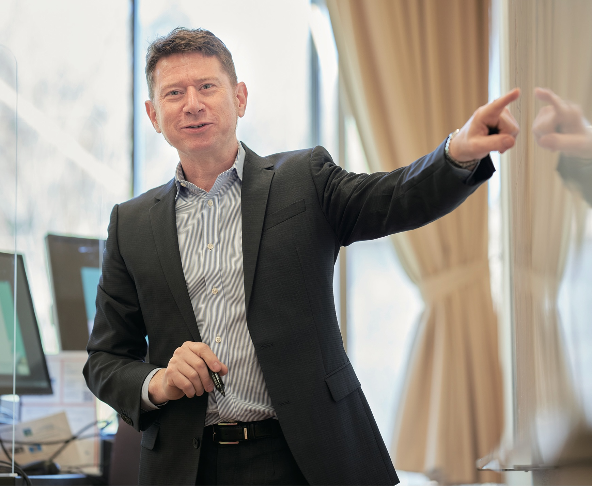

Bio sketch
I am Professor (Finance) and Director of the Global Business Program at Akita International University (AIU) in Japan. My research focusses on the analysis of financial market data, primarily the stock and commodities markets at the moment. I teach undergraduate courses in finance and business. I’m also an adviser for Acumain Inc., a San Francisco-based investment management startup.
Previously, I held Associate Professor positions in Graduate School of Economics at Kobe University and at AIU.
Prior to academia, I was a Director at BlackRock Japan, formerly with Barclays Global Investors Japan. I produced investment signal research and strategy for a large multi-asset class systematic global macro hedge fund. I worked closely with the Global Market Strategy Group teams in San Franciso, London and Sydney.
Before moving to Japan I was an Adviser at the Reserve Bank of New Zealand in Wellington. I worked in the Markets Analysis and Research team, providing guidance on the conduct of monetary and financial stability policy from a financial markets perspective. At the Bank, I also helped coordinate EMEAP (high-level interaction between Asia-Pacific central banks) and manage the Professorial Fellowship program.
Even before that, I worked in emissions trading, energy economics, renewable energy, economic development, international trade and held management positions in businesses in Australia.
My PhD thesis is on the empirical finance of non-ferrous metals markets and was completed at the University of Western Australia under the supervision of prominent econometrician Professor Michael McAleer.

Links
Contact me Contact me Curriculum Vitae LinkedIn
Practitioner experience
- Financial Markets & Corporate Finance
- Investment Management & Banking
- Macroeconomics, Monetary Policy & Financial Stabilty
- Quantitative Modelling & Analytics
- Renewable Energy, Emissions Trading & Energy Economics
- Development Economics
- International Business & Trade
- Small Business Management
Academic research interests
- Commodity, Equity & Foreign Exchange Modelling
- Market Microstructure & Efficiency
- Corporate Finance, Factor Models
- Risk
- Quantitative Modelling & Analytics, Applied Econometrics
- Intercultural Competencies in Business & Education
Consulting
I have worked as a consultant in various areas of finance, including investment strategy & research, investment management, banking & technology, data science, quantitative modelling and research report writing. Please Contact me to discuss my services.
Academic Genealogy
My ‘academic genealogy’ goes back to Robert Solow and Wassily Leontief.
Tools
I do virtually all of my work using R, RStudio, Quarto, LaTeX, JabRef and Joplin.
Hobbies
I am also interested in photography using film cameras and making prints in the darkroom , as well as sailing and cycling, especially cycling in snow.
Sometimes I like to run as long as there is some walking involved. I’ve joined some events including the Akita Trail Running Festival (mid course), Tazawako Marathon (half), Yamanakako Marathon (half), Dalian Marathon (half), Kochi Ryoma Marathon, Naha Marathon (failed!), Iwakuni Road Race, Kouzushima Aquathlon, Izu-Oshima Marathon (10km).